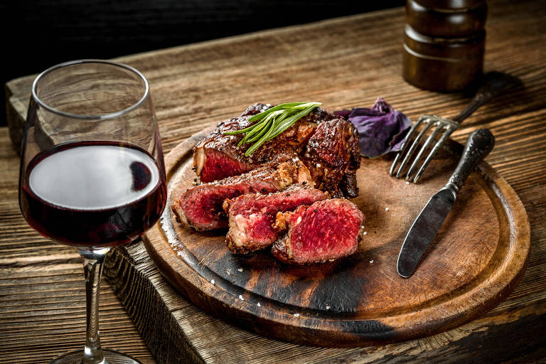

Harmonização de Vinhos
Conheça os principais tipos de vinhos e descubra como combiná-los com diferentes alimentos para realçar o melhor de cada sabor.
Vinhos Tintos
Combinam com carnes vermelhas, queijos fortes e massas com molhos encorpados.
- Cabernet Sauvignon: ótimo com churrasco, carne assada e queijos curados como parmesão.
- Pinot Noir: combina bem com frango grelhado, salmão e cogumelos.
- Malbec: excelente com carne de cordeiro e pratos picantes.

Vinhos Brancos
Ideais para pratos mais leves, com sabores sutis e toques cítricos.
- Sauvignon Blanc: ótimo com frutos do mar, ceviche e saladas verdes.
- Chardonnay: vai bem com massas ao molho branco, peixes e frango assado.
- Riesling: combina com pratos levemente apimentados, como comida tailandesa.

Espumantes
Refrescantes e versáteis, combinam com quase tudo, especialmente petiscos e entradas.
- Brut: perfeito com batata frita, sushi e canapés.
- Moscatel: ótimo para sobremesas leves e frutas.

Vinhos Doces
Ideais para acompanhar sobremesas e criar contrastes com queijos azuis.
- Vinho do Porto: excelente com chocolate amargo ou gorgonzola.
- Late Harvest: combina com frutas secas e tortas doces.